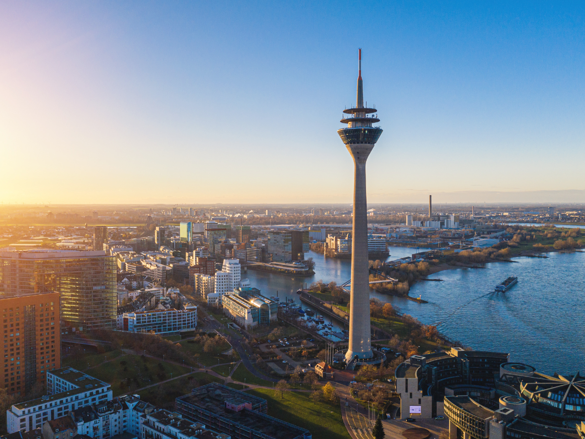

Chauffeur Service Dusseldorf for Corporate Clients
A trade-fair city with an international economy. From DUS Airport to the Königsallee, we bring your guests safely to their destination.
A Trade-Fair City with an International Business World
Dusseldorf ranks among the most important trade-fair locations in Europe and is home to the largest Japanese business community in Germany. International exhibitors, business partners and delegations shape the character of the city, especially during the major trade-fair weeks.
What Sets Our Chauffeur Service in Dusseldorf Apart
Dusseldorf Airport (DUS)
As Germany’s third-largest airport, DUS is well connected to the city centre. The journey to the centre usually takes 20 to 30 minutes.
Messe Düsseldorf
Boot Düsseldorf, ProWein and the K trade fair for plastics attract international exhibitors every year. During these weeks we deliberately increase our capacity.
Königsallee
The Kö is not only a shopping street but also home to many office buildings and corporate offices. A frequent destination for our corporate clients.
Japanese Business Community
The largest Japanese community in Germany has settled around the Immermannstraße. Many Japanese companies with a branch in Dusseldorf are among our recurring clients.
What Our Clients in Dusseldorf Rely On
Trade-Fair Experience
We know the routines around the entrances and exits of Messe Düsseldorf and the congestion at peak times on trade-fair days.
International Guests
Experience in dealing with Japanese and other international business partners.
Short Distances
The airport lies close to the city, so long transfer times are usually avoided.
Reliable Scheduling
For exhibitors with several appointments per trade-fair day, the vehicle is ready without long waiting times.
The Right Class for Every Appointment
For trade-fair guests with plenty of luggage, the V-Class is ideal; for one-on-one meetings with business partners, the Business Class.
View All Vehicle ClassesFrequently Asked Questions about the Chauffeur Service in Dusseldorf
The journey normally takes 20 to 30 minutes, depending on traffic.
Yes, during trade fairs such as boot or ProWein we set up fixed connections between hotels and the exhibition grounds.
Yes, particularly in dealing with Japanese delegations, who are regular guests in Dusseldorf.
Yes, many exhibitors book us in advance for the entire duration of a trade fair.
Book a Chauffeur Service in Dusseldorf.
Tell us about your appointment, and we will provide the right driver and the right vehicle.